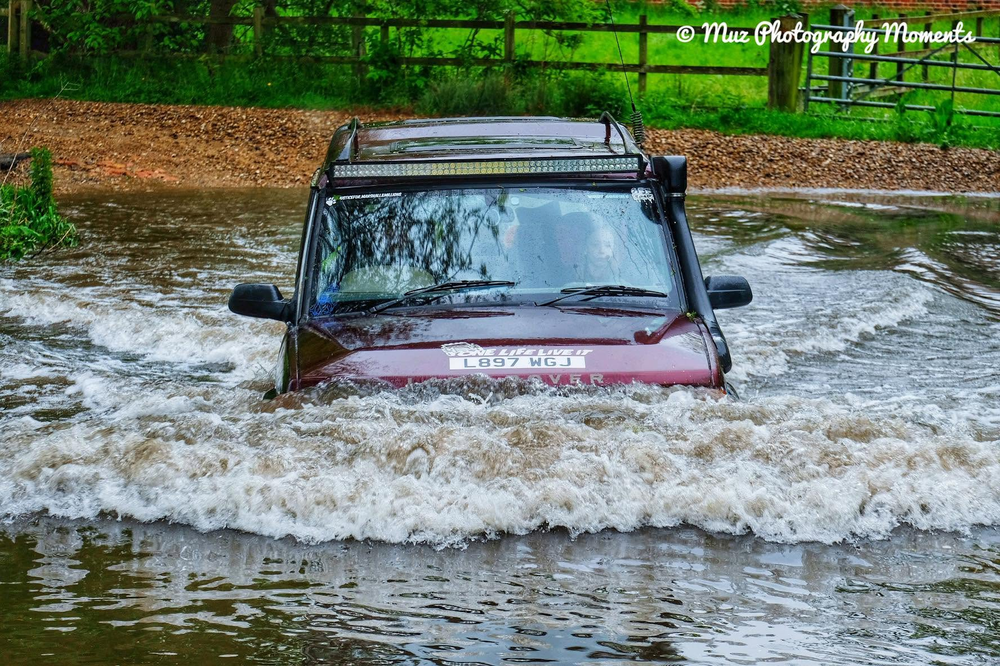
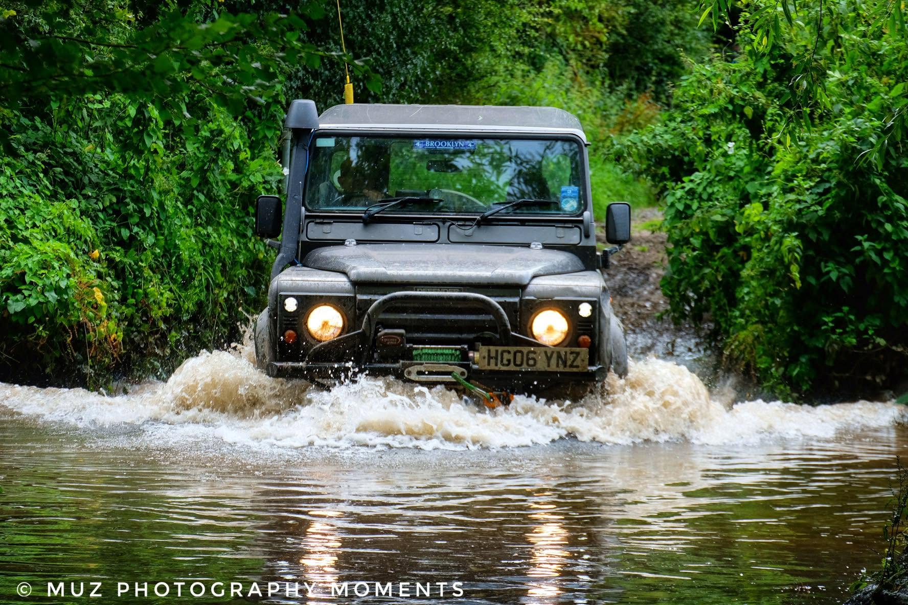

Free to join
No club fees or fuss. Join the Facebook group and say hello.
Green laning: friendly, free, once a month
Monthly green road runs for people who enjoy exploring the UK's legal green lanes, byways, and unclassified roads with a relaxed group.
What we are about
Merlin's Mystery Tours is a free UK green laning group for friendly monthly runs, shared routes, and responsible days out on the lanes.
No club fees or fuss. Join the Facebook group and say hello.
Regular green road runs for drivers who want a friendly day out.
Focused on legal green lanes, countryside access, and considerate driving.
Moments from the lanes


Before you join a green road run
By participating in a green road run with Merlin's Mystery Tours, you are agreeing to the information below. If you are unsure or disagree with this statement, please do not participate in any GRRs.
Your vehicle is your responsibility and must be road legal. You have a duty of care for your passengers and are responsible for your own safety.
Merlin's Mystery Tours organises green road runs (GRRs) on a regular basis. These events follow a route using only public roads and may include roads that are not surfaced by tarmac. Many of these are known as green roads, green lanes, byways, or unclassified roads (UCRs), and are not maintained to the standard of A, B, or C roads.
Your vehicle may get scratched and ruts may cause damage. It is likely that you will get stuck. Contact with solid objects is possible, and fords may be encountered that might cause water ingress to your vehicle. If you are concerned about the suitability of a green road, ask the leader for a by-pass route.
Merlin's Mystery Tours cannot be held responsible for any damage to your vehicle, or to any person, animal, or possession inside or outside of the car whilst on an event.
Our aim is to cause as little impact on the environment as possible through responsible driving. Courtesy and patience should be shown to everyone we meet. When encountering animals, loose or otherwise, great care should be taken. Vehicles should always stop, turn off the engine, and let horses pass unless signalled otherwise by the rider.
Merlin's Mystery Tours events are not motor sport in any way. We abide by The Countryside Code .